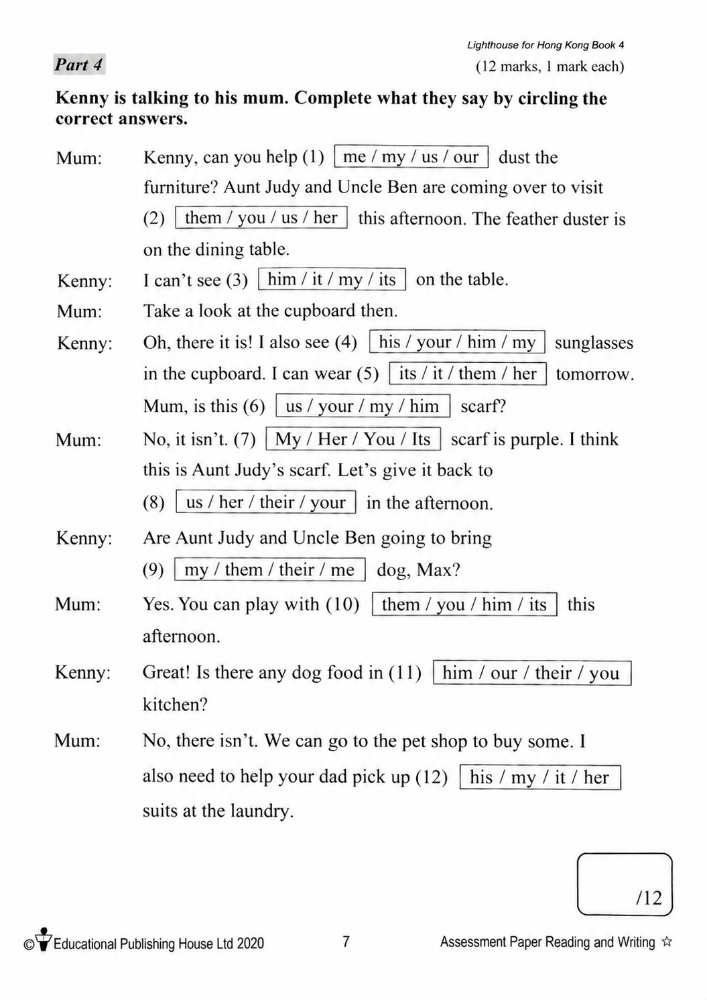

已掌握
| # | 中文意思 | 例句/提示 | 英文默写 | 已掌握 |
|---|---|---|---|---|
| noun 名词 | ||||
| 1 | 邮票 | I put a on the postcard. | ||
| 2 | 大厅 | We meet in the school . | ||
| 3 | 火车 | We travelled to the city by . | ||
| 4 | 叶子 | A falls from the tree. | ||
| 5 | 活动 | This is fun. | ||
| 6 | 花 | This is red. | ||
| 7 | 肩膀 | My school bag hangs from my . | ||
| verb 动词 | ||||
| 8 | 抓住 | Try to the ball. | ||
| 9 | 洗澡 | I before bed. | ||
| 10 | 付款 | I for the book. | ||
| 11 | 理解 | I the question. | ||
| 12 | 等待 | Please for me at the gate. | ||
| 13 | 站立 | Please in a line. | ||
| 14 | 折叠 | Please the paper in half. | ||
| preposition 介词 | ||||
| 15 | 穿过；横跨 | We walk the road. | ||
| phrase 短语 | ||||
| 16 | 留在家里 | We on rainy days. | ||
| pronoun 代词 | ||||
| 17 | 他们 | are my friends. | ||
| 18 | 它们 | I can see in the garden. | ||
| verb phrase 动词短语 | ||||
| 19 | 去徒步 | We on Sunday. | ||
| question word 疑问词 | ||||
| 20 | 哪一个 | one do you like? | ||
| # | 单词/词组 | 中文意思 | 例句/说明 | 已掌握 |
|---|---|---|---|---|
| adjective 形容词 | ||||
| 1 | naughty | The naughty puppy runs around. | ||
| 2 | sad | I feel sad because I miss my friends. | ||
| 3 | poor | Once upon a time there was a poor man called Billy. | ||
| 4 | fresh | Eric's mum helps him choose some fresh apples. | ||
| 5 | joyful | What a joyful day! | ||
| noun 名词 | ||||
| 6 | instruction | Read each instruction before you start the test. | ||
| 7 | grammar | We are learning English grammar. | ||
| 8 | fish | I can see a fish in the water. | ||
| 9 | content | This book has interesting content. | ||
| 10 | fin | A fish has a fin. | ||
| 11 | parrot | The parrot can talk. | ||
| 12 | pilot | The pilot flies a plane. | ||
| 13 | lollies | The children bought some lollies. | ||
| 14 | chopsticks | We eat noodles with chopsticks. | ||
| 15 | Music | We have Music on Friday. | ||
| 16 | teatime | Look at the menu. It is teatime. | ||
| 17 | bottom | My pencil is at the bottom of my bag. | ||
| noun phrase 名词短语 | ||||
| 18 | a bowl | Put the egg into a bowl. | ||
| 19 | special set | The special set includes a sandwich and a drink. | ||
| verb 动词 | ||||
| 20 | complete | Please complete the sentence. | ||
| 21 | wrap | Please wrap the present in paper. | ||
| 22 | bark | Dogs sometimes bark at strangers. | ||
| preposition 介词 | ||||
| 23 | at | It starts at two o'clock in the afternoon. | ||
| phrase 短语 | ||||
| 24 | Lamma Island | We took a ferry to Lamma Island. | ||
| verb phrase 动词短语 | ||||
| 25 | have a picnic | I want to go there because I want to have a picnic. | ||
| 26 | playing board games | We like playing board games. | ||
| 27 | go on rides | We went on rides at the theme park. | ||
| 28 | sing carols | We sing carols at Christmas. | ||
| 29 | get up late | I sometimes get up late because there is no school. | ||
| 30 | look for | Lester looks for Milo everywhere. | ||
| # | 中文意思 | 例句/提示 | 英文默写 | 已掌握 |
|---|---|---|---|---|
| time/date 时间日期 | ||||
| 1 | 二月 | is the second month. | ||
| 2 | 六月 | is the sixth month. | ||
| 3 | 星期一 | is a weekday. | ||
| 4 | 星期四 | is a weekday. | ||
| 5 | 星期六 | is a weekend day. | ||
| time unit 时间单位 | ||||
| 6 | 年 | A has 12 months. | ||
| numbers 数字 | ||||
| 7 | 7 | is 7. | ||
| 8 | 18 | is 18. | ||
| 9 | 20 | is 20. | ||
| 10 | 40 | is 40. | ||
| ordinal numbers 序数 | ||||
| 11 | 第一 | This is the shape. | ||
| solid shape 立体图形 | ||||
| 12 | 三棱锥 | A has triangular faces. | ||
| 13 | 圆锥 | A has one curved face. | ||
| plane shape 平面图形 | ||||
| 14 | 三角形 | A has three sides. | ||
| 15 | 六边形 | A has six sides. | ||
| # | 单词/词组 | 中文意思 | 例句/说明 | 已掌握 |
|---|---|---|---|---|
| numbers 数字 | ||||
| 1 | approximate value | The approximate value of 198 to the nearest ten is 200. | ||
| operations 运算 | ||||
| 2 | total | Find the total number of apples. | ||
| 3 | carrying | Carrying helps when the ones make ten. | ||
| geometry 几何 | ||||
| 4 | perpendicular | Perpendicular lines meet at a right angle. | ||
| 5 | acute angle | An acute angle is smaller than a right angle. | ||
| question word 题目词 | ||||
| 6 | onwards | Count onwards from 20. | ||
| comparison 比较 | ||||
| 7 | more | 8 is more than 5. | ||
| 8 | lightest | The 1 kg bag is the lightest of the 1 kg, 2 kg and 3 kg bags. | ||
| 9 | heavier | A 3 kg bag is heavier than a 2 kg bag. | ||
| 10 | heaviest | The 3 kg bag is the heaviest of the 1 kg, 2 kg and 3 kg bags. | ||
| time/date 时间日期 | ||||
| 11 | leap year | A leap year has 366 days. | ||
| 12 | non-leap year | A non-leap year has 365 days. | ||
| quantity 数量 | ||||
| 13 | pair | A pair means two things together. | ||
| position 位置 | ||||
| 14 | behind | The bag is behind the chair. | ||
| 15 | front | The door is at the front of the room. | ||
| operations calculation 运算 | ||||
| 16 | difference | The difference is the answer in subtraction. | ||
| 17 | A times B | A times B means multiplication. | ||
| 18 | multiplication | In multiplication, 3 times 4 equals 12. | ||
| 19 | division | Division is the opposite of multiplication. | ||
| measurement 测量 | ||||
| 20 | metre | A metre is 100 centimetres. | ||
| 21 | height | Measure the height of the box. | ||
| data charts 统计图 | ||||
| 22 | block chart | Read the block chart. | ||
| geometry tool 几何工具 | ||||
| 23 | geo-strip | A geo-strip can help make shapes. | ||
| 句型结构 | ||||
| 24 | Angle ... is larger than Angle ... | Angle A is larger than Angle B. | ||
| 25 | Angle ... is smaller than Angle ... | Angle A is smaller than Angle B. | ||
| 26 | Angle ... is the largest. | Angle A is the largest. | ||
| 27 | ... is to the east of ... | The school is to the east of the park. | ||
| 28 | ... is to the south of ... | The library is to the south of the shop. | ||
| 29 | ... is to the west of ... | The bank is to the west of the school. | ||
| plane shape 平面图形 | ||||
| 30 | isosceles trapezium | An isosceles trapezium has two equal legs. | ||

